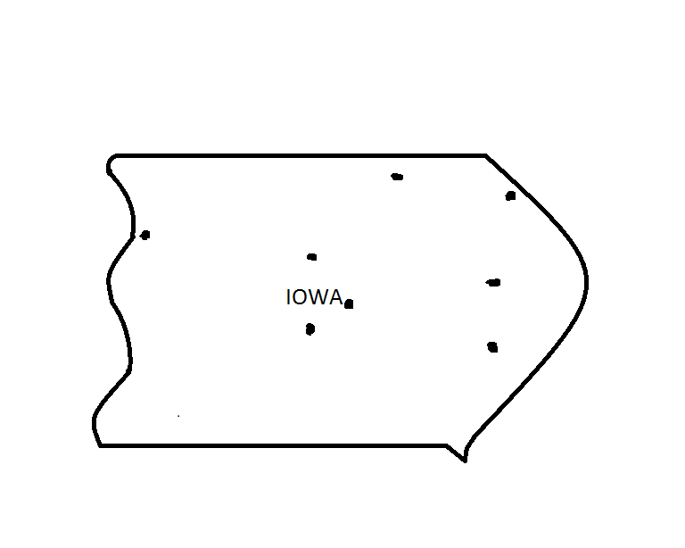

We have a variety of locations all around Iowa and hope to help all those looking for a mountain biking club. Whether you're looking to join one of our clubs or even start your own, we can help. We have locations in Des Moines, Iowa City, Davenport, Cedar Rapids, Sioux City, and Ames.
If you look at the map of Iowa below, you will see just some of our major locations in Iowa. If you're looking to join a mountain biking club in Iowa, you've come to the right place.
